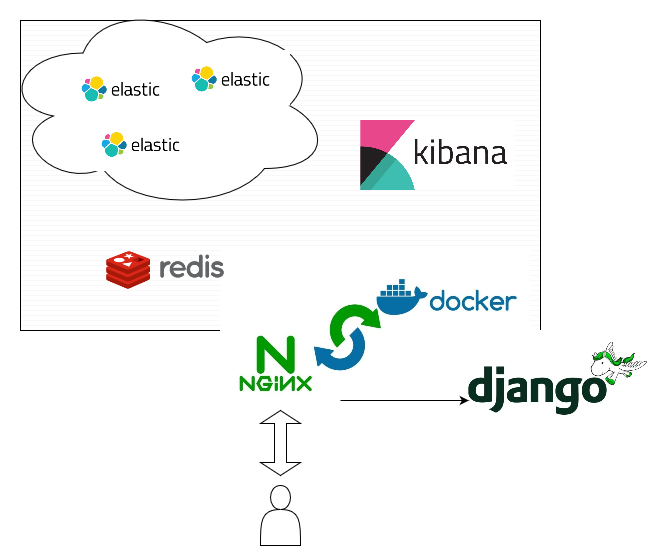

Installation
SoVisu est un projet s’appuyant sur le framework Django et qui est constitué de 2 applications:
elasticHal, qui est chargée de récupérer les informations les structures et les laboratoires.
sovisuhal qui collecte les identifiants chercheurs, les métadonnées de leurs publications sur Hal pour présenter l
Les données récupérées sont stockées sur un moteur de recherche Elasticsearch, couplé à l’interface utilisateur Kibana qui est utilisée pour créer les tableaux de bord proposés aux utilisateurs.
Prérequis
Afin d’initialiser le projet, il est nécessaire de disposer d’une machine équipée de Python (version 3.9=~), de Docker, ainsi que de Git.
Il n’est pas nécessaire de créer des index pour Elasticsearch, ces derniers sont créés par elasticHal lors de la collecte.
Le code de SoVisu est accessible sur https://github.com/Patent2net/SoVisu .
Configuration de l’environnement
Clonez le répertoire
(.venv) $ git clone https://github.com/Patent2net/SoVisu/
installez les requirements dans le projet SoVisu
(.venv) $ pip install -r requirements.txt
Dans doc/VisuStack, créer le dossier
volumeainsi que les sous-dossiersbackup1,data1,data2,data3etMB-data.Exécutez la commande suivante pour installer l’environnement serveur utilisé par le projet:
(.venv) $ docker-compose doc/VisuStack/docker-compose.yml
Avertissement
Cette commande peut prendre du temps à s’exécuter, car elle télécharge les images Docker de Kibana, ElasticSearch et Redis qui sont nécessaires au fonctionnement du projet.
SoVisu s’appuie sur une architecture telle la figure ci-dessous: Docker héberge tous les services supports excepté le serveur Django. Nginx sert de frontal de sécurité à tous les services y compris SoVisu.
{kind=link}
Initialisez les migrations de SoVisu:
(.venv) $ python manage.py migrate
Désignez le serveur CAS de l’institution:
(.venv) $ python manage.py add_institution "nom de l'institution" https://cas.exemple.fr
Créez un profil administrateur:
(.venv) $ python manage.py createsuperuser
Astuce
il vous sera demandé de rentrer un identifiant, une adresse mail et un mot de passe. Bien que l’identifiant et le mot de passe soient obligatoires, le champ adresse mail est optionnel.
Mise en route
Avertissement
Avant toute mise en route de SoVisu, vérifiez que l’instance elastic avec lequel le projet interagit est active. Si ce n’est pas le cas, SoVisu renverra un message d’erreur au lieu de s’initialiser normalement.
Initialisation des processus dans la partie Admin
Lancez SoVisu:
(.venv) $ python manage.py runserver
Visitez l’adresse suivante: http://127.0.0.1:8000/admin/
Renseignez les identifiants administrateur créés précédemment.
- En arrivant dans l’interface d’administration, vous pouvez voir les différentes Applications de SoVisu:
« Authentification et autorisation », qui est présente par défaut dans Django. Elle permet de gérer les utilisateurs se connectant avec des identifiants créés depuis l’interface administrateur ou avec des commandes depuis manage.py.
« Elastichal », qui permet d’initialiser la base de données Elasticsearch.
« Uniauth », qui permet dans le cas d’une installation dans une institution de gérer la connection à partir des identifiants CAS.
{kind=link}
- Dans la partie « Elastichal », trois modèles sont disponibles:
« Chercheurs », qui permet de stocker les informations de base concernant les objets chercheurs.
« Laboratoires », qui permet de stocker les informations de base concernant les objets laboratoires.
« Structures », qui permet de stocker les informations de base concernant les objets structures institutionnelles dont dépendent les laboratoires.
Cliquez sur « Chercheurs » dans l’onglet « Elastichal ».
{kind=link}
- Le menu des modèles présent dans l’application Elastichal vous propose plusieurs options disponibles en cliquant sur les boutons situés en haut à droite de l’écran:
« Peupler Elastic », permet d’initialiser la base de données Elasticsearch à partir des données présentes dans les modèles Elastichal.
« Mettre à jour Elastic », permet de mettre à jour les données présentes dans Elasticsearch à partir des données présentes dans les modèles Elastichal.
« Importer des données », permet d’importer des données dans le modèle à partir d’un fichier CSV.
« Ajouter chercheur », permet d’ajouter un chercheur manuellement dans le modèle.
Dans le cas de la mise en route de SoVisu, nous allons importer des données à partir d’un fichier CSV.
Cliquez sur « Importer des données ». Sur la page suivante il vous sera demandé d’importer un fichier. Il est important que celui ci soit au format CSV, et qu’il contienne des champs précis en fonction du modèle à remplir (voir les astuces ci dessous pour plus de détails).
Astuce
Dans le cas du modèle « Chercheurs », le fichier csv devra contenir les colonnes suivante: structSirene, ldapId, name, type, function, mail, lab, supannAffectation, supannEntiteAffectationPrincipale, halId_s, labHalId, idRef, structDomain, firstName, lastName, aurehalId
exemple de fichier CSV Chercheurs:
structSirene |
ldapId |
name |
type |
function |
lab |
supannAffectation |
supannEntiteAffectationPrincipale |
halId_s |
labHalId |
idRef |
structDomain |
firstName |
lastName |
aurehalId |
|
|---|---|---|---|---|---|---|---|---|---|---|---|---|---|---|---|
198307662 |
dreymond |
REYMOND David |
Personnel |
Enseignant Chercheur Titulaire |
IMSIC |
IMSIC |
IUT TC |
david-reymond |
527028 |
122796527 |
univ-tln.fr |
David |
REYMOND |
599503 |
Astuce
Dans le cas du modèle « Laboratoires », le fichier csv devra contenir les colonnes suivante: structSirene; acronym; label; halStructId; rsnr; idRef
exemple de fichier CSV Laboratoires:
structSirene |
acronym |
label |
halStructId |
rsnr |
idRef |
|---|---|---|---|---|---|
198307662 |
IMSIC |
Institut mediterranéen des sciences de l’information et de la communication |
527028 |
527028 |
233736085 |
Astuce
Dans le cas du modèle « Structures », le fichier csv devra contenir les colonnes suivante: structSirene, label, acronym, domain
exemple de fichier CSV structures:
structSirene |
label |
acronym |
domain |
|---|---|---|---|
198307662 |
Université de Toulon |
UTLN |
univ-tln.fr |
Répétez l’opération pour les autres modèles dans Elastichal.
Une fois les trois modèles complétés, retournez sur le menu d’un des modèles Elastichal et cliquez sur « Peupler Elastic ».
{kind=link}
- Par défaut, « Peupler elastic » propose de remplir la base de données Elasticsearch avec les données présentes dans les modèles Structures, Laboratoires et Chercheurs.
Cliquez sur « soumettre » afin de lancer le processus de collecte, Il est possible de voir l’état de la collecte dans la partie « Progression » de la page.
Avertissement
Lors d’une première mise en route, il est impératif de lancer « peupler elastic » avec l’ensemble des modèles remplis. Le modèle structure permet de délimiter la récupération dans le cas ou les laboratoires et/ou chercheurs seraient recensés dans plusieurs structures. La récupération des données dans Elasticsearch est longue, et peut prendre du temps.
Astuce
La fonction « peupler elastic » peut également être utilisée par la suite pour mettre à jour en masse l’ensemble des données d’un ou de l’ensemble des modèles proposés par SoVisu: celle ci se base sur les données des modèles présent dans Django mais également les éléments déjà importés dans Elasticsearch. Pour cela, il suffit de sélectionner la partie qui doit être mise à jour pour lancer un processus allégé.
Spécificités de la mise en route de SoVisu pour le développement
Dans le cas d’une installation de SoVisu sur une machine de développement n’ayant pas accès à l’authentification par CAS, il est nécessaire de définir un profil utilisateur afin d’accéder à l’application. Dans le cas d’un profil chercheur, celui ci est identifié par SoVisu grâce à son identifiant ldapId. Le nom d’utilisateur est le même que l’identifiant ldapId.
Il est cependant possible de définir un profil utilisateur nommé « adminlab », reconnu par SoVisu comme un administrateur du laboratoire et ayant donc accès complet à l’application.
Dans l’interface d’administration de SoVisu, cliquez sur « Utilisateurs » dans « Authentification et autorisations ».
Cliquez sur « Ajouter utilisateur ».
Créez un utilisateur ayant pour nom d’utilisateur « adminlab », le mot de passe est libre de choix.
Cliquez sur « Enregistrer ».
Initialisation des visualisations dans Kibana
Dans Kibana, il est possible de créer des visualisations à partir des données présentes dans Elasticsearch. Par défaut SoVisu propose des visualisations qui sont disponibles dans les dossiers du projet: SoVisu/doc/Dashboards/
Afin de les rendre disponible il est nécessaire de les importer dans l’instance Kibana dont dépend votre installation.
Dans Kibana, ouvrez le menu.
Dans la section Management, cliquez sur « Stack Management »
Sur la nouvelle page affichée, allez dans « Saved Objects »(dans la section Kibana).
Cliquez sur « Import » et importez les fichiers disponibles dans le dossier SoVisu/doc/Dashboards/, en sélectionnant les options « check for existing objects » et « automatically overwrite conflicts ».
Cliquez sur « import ».
Kibana vous signale l’ensemble des objets modifiés; Cliquez sur « Done »
répétez les points 4 à 6 pour l’ensemble des fichiers dans le dossier.
Mise en production
Avertissement
à compléter